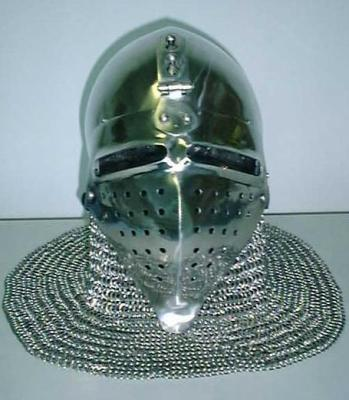
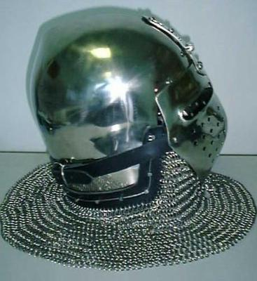
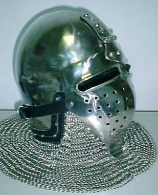
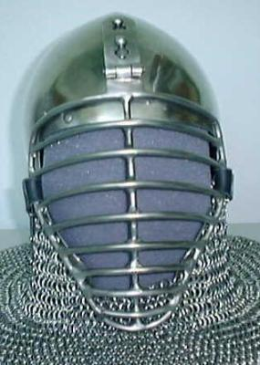
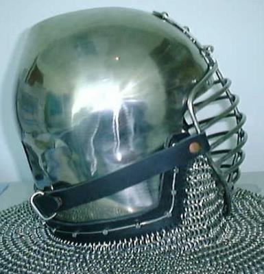
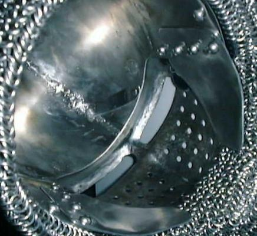

Mid-14th Century style Klapp Visor Bascinet







Mid-14th Century style Klapp Visor Bascinet:
Size: Medium
Length: Regular
Completed: Aug. 3, 1999
The helmet shown is a size
medium with close fitted bottom plate. The weight of the helmet is about
7 lbs. without camail or (currently) 12 lbs. with camail. Sheet metal
is 14ga. 304 stainless steel except for the hinge which is 12ga..
Notes: The two rivet shafts
(one on each side) just above the top of the face plate keep the face plate
from shifting side to side or up. There is a spring pin that goes through
the bottom key hole in the hinge to lock it in place.
I would build this helmet in the following order:
1) Cut out the plates.
2) Punch holes in the side/bottom plate for the camail
mounting and cheek plates.
3) Finish the plate edges and corners.
4) Dish and shape the top halves. (Read the FAQ
for instructions on dishing this type of top)
5) Weld the top halves together.
6) Grind weld flush on the outside and cleanup weld on
the inside if needed.
7) Shape the side/bottom plate to fit the helmet top.
8) Weld the side/bottom plate on to the helmet top.
9) Grind weld flush on the outside and cleanup weld on
the inside if needed.
10) Put a around a 220 grit finish on the helmet. (I use the Course
and then Medium 3M surface conditioning disks)
11) Add leather mounting strip for camail.
12) Dish, raise, and crease the Klapp Visor face plate then shape it
to fit helmet with camail mounting in place.
13) Punch breath holes and cut eye slots. Flare the edges of the eye
slots.
14) Build the hinges for the two face plates.
15) Added rivet posts to the helmet will go through the key hole slots
on the hinges.
16) Rivet the hinge onto the Klapp Visor face plate.
17) Add spring pin on helmet that goes through the bottom of the lower
key hole slot on the face plate hinge.
18) Shape the two cheek plates so that they support the face plate.
19) Rivet cheek plates on to the helmet so that they are attached under
the side/bottom plate (NOT over).
20) Add two rivet posts above the top edge of the face plate to keep
it from shifting from side to side.
21) Build the bar grill visor.
22) Weld the hinge onto the bar grill visor. Be sure to adjust the
lenght of the hinge so that the top bar hits the two rivet posts at the
same time the bottom of the visor hits the cheek plates.
23) Add visor straps.
24) Add the camail (Your on your own with the camail).
Copyright 1999 Craig W. Nadler All rights reserved